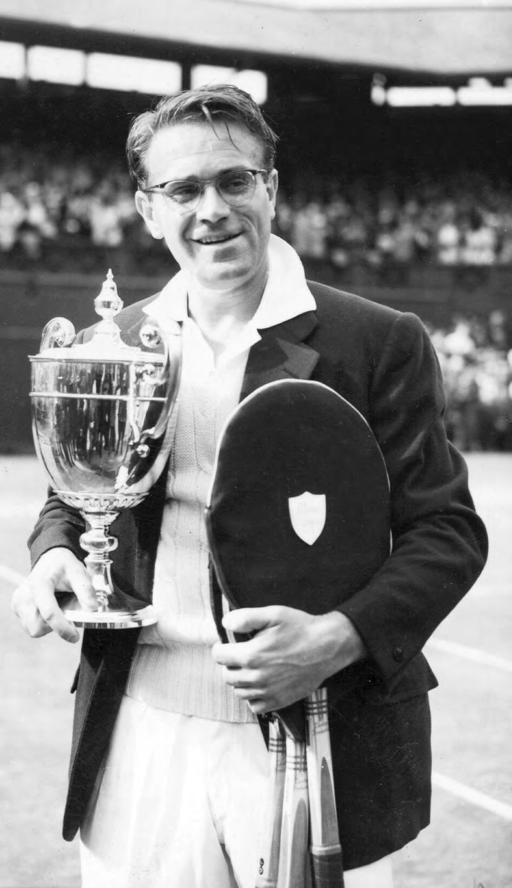

1954
Jaroslav Drobný
Wimbledon · dvouhra mužů · finále
| Drobný | 13 | 4 | 6 | 9 |
|---|---|---|---|---|
| Rosewall | 11 | 6 | 2 | 7 |
Egypt
Na Štvanici vyrostl jako syn správce, začínal jako sběrač míčků. Wimbledon vyhrál jako emigrant – a jako jediný muž v brýlích.